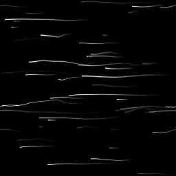

Scratches Generator

Scratches Generator (Normal)
In: Texture Generators/Patterns
Complex
Description
This places random scratches with a lot of customisation options, for example allowing you to set direction, spread and distortion.
There's a special version of Scratches Generator, Scratches Generator Normal, which generates Normalmaps based on the depth of these scratches. Most options are exactly the same, but it has a few extra parameters clearly marked for Normal settings (see below).
Parameters
- Spline Number: 1 - 512
Amount of scratches (splines) to place. - Max Segments Per Spline: 2 - 256
Amount of segments/subdivisions over the length of a scratch. Leads to smoother curves and distortions. The effect is more noticeable with higher Distortion values. - Spline Rotation: 0.0 - 1.0
Uniform rotation of all splines, to orient them in a direction. - Spline Rotation Random: 0.0 - 1.0
Variation of angle, randomly rotates every spline. - Spline Scale: 0.0 - 1.0
Uniformly scales all splines. - Spline Scale Random: 0.0 - 1.0
Randomly scales each spline individually. - Spline Distortion: 0.0 - 1.0
Uniform distortion level across all splines. - Spline Distortion Random: 0.0 - 1.0
Randomises the level of distortion of each spline individually. - Spline Distortion Frequency: 0.0 - 1.0
Sets the frequency of distortion, controls the scale of distortion detail. - Spline Width: 0.0 - 2.0
Sets the width of all splines uniformly. - Spline Width Random: 0.0 - 1.0
Randomises the spline width of each spline individually. - Spline Position Random: 0.0 - 1.0
Randomises the position of each spline individually. The lower this value, the more splines will cluster to the center of the canvas. Can be used to create spots of scratches. - Set Spline Width in px: False/True
Determines the units used for spline width settings. - Luminance Random (Grayscale version only): 0.0 - 1.0
Randomises the Luminance of each spline individually. - Normal Intensity (Normal version only): 0.0 - 1.0
Sets the strength of the Normal effect for every spline globally. - Normal Intensity Random (Normal version only): 0.0 - 1.0
Randomises the normal strength for each spline individually. - Normal Format (Normal version only): DirectX, OpenGL
Switches between different Normalmap formats (inverts the green channel). - Fade Mode: None, Start, End, Start + End
Sets whether and in what direction the splines fade. - Fade Length: 0.0 - 1.0
Sets the length of the fade effect, if enabled above. - Non Square Expansion: False/True
Enables compensation of squash and stretch with non-square ratios.
Example Images
|

|
|
|---|---|